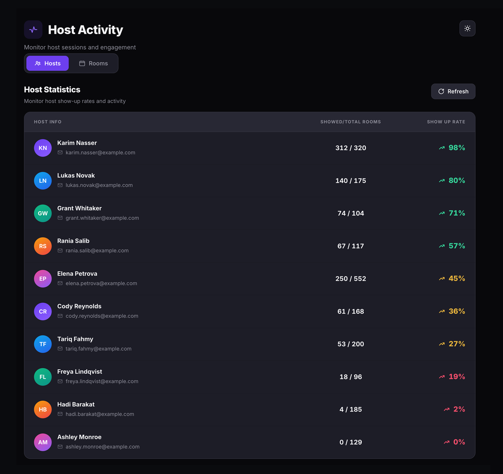
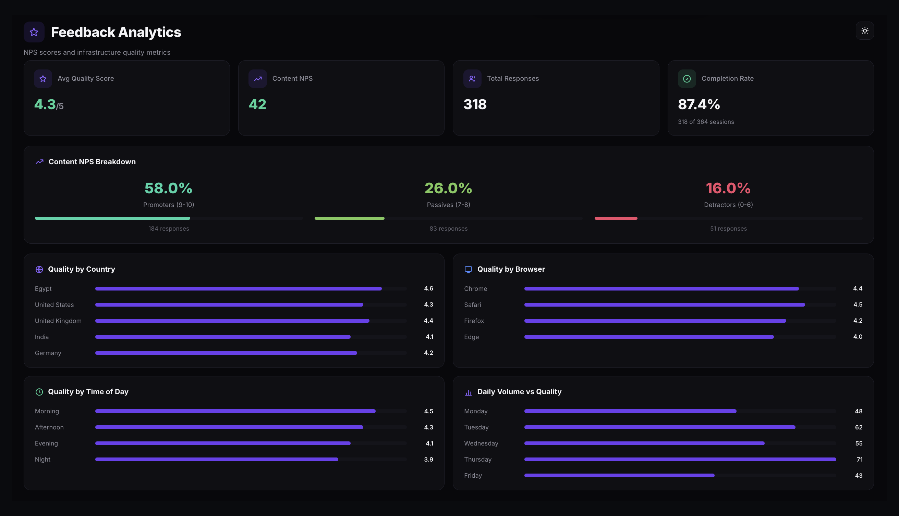
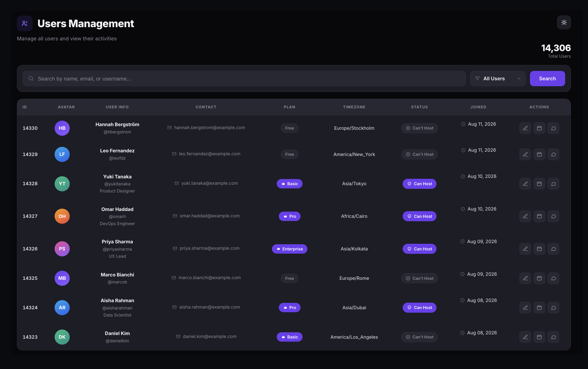

One dashboard for your entire membership operation.
See member engagement, event attendance, course completion, networking activity, and revenue in one place — no stitching six systems together to build a board report. A member rollup table adds tier, course progress, learning hours, and certification, with filters and CSV or Excel export. Bulk email members, manage roles, and track renewals from the same admin panel.
- Headline metrics — Active members, Event attendance, Course completion, and Monthly revenue, each with month-over-month change.
- Member rollup table — tier, courses completed, overall progress, learning hours, and certificate status, filterable and exportable to CSV or Excel.
- Built-in admin actions — bulk email members and manage roles without leaving the dashboard.

Track every learner from enrollment to certification.
The all-courses dashboard shows total enrollment, course count, average completion rate, and certification status. Filter by courses completed, completion percentage, certificate status, or date range. Drill into any individual course to see per-learner progress bars, lesson counts, and last activity timestamps.
- Program-level view — members enrolled, courses available, average completion, and certified count.
- Course-level drill-down — per-learner progress, lesson completion, and last activity.
- Export data — download learner tables as CSV or Excel for reporting.

Know which hosts show up — and which don't.
The Host Activity page tracks show-up rates across every host on your platform. The Hosts tab ranks each host by attendance ratio. The Rooms tab shows every room with its status, host attendance, scheduled time, duration, and attendee count. Filter by live, upcoming, or past events and search by room title or host name.
- Host show-up rate — showed vs. total rooms, color-coded from green (reliable) down to red (low turnout).
- Room activity — status (Live Now, Upcoming, Past), host present/missing, duration, and attendees.
- Filter and search — narrow by room status or search by title and host name.

Measure session quality with NPS and quality scores.
Post-call feedback is collected automatically after every session. The Feedback Analytics dashboard shows average quality scores, Net Promoter Score with Promoter/Passive/Detractor breakdowns, total responses, and completion rate. Four charts break quality down by country, browser, time of day, and daily volume.
- NPS breakdown — Promoters (9–10), Passives (7–8), and Detractors (0–6) with percentages.
- Quality dimensions — by country, by browser, by time of day, and daily volume vs. quality.
- Automatic collection — feedback dialogs appear after every completed session. Anonymous and used for quality monitoring only.

Every user, searchable and manageable.
The Users Management page lists every registered user with their ID, name, email, plan, timezone, hosting status, and join date. Search by name or email, filter by hosting privileges, edit profiles and plans, and drill into any user's hosted events or consultation services.
- Search and filter — find users by name, email, or username. Filter by Can Host or Can't Host.
- Edit profiles — update name, email, username, and plan from the admin panel.
- View user activity — see each user's hosted events and consultation services with full details.

Full visibility over every transaction and payout.
The Platform Payments page shows every payment across your deployment — total revenue, platform fees, pending payouts, and organizer earnings. Search by event, organizer, or participant, filter by events or consultations, and manage payout requests with approve or reject controls.
- Revenue summary — Total Revenue, Platform Fees, Pending Payouts, and Organizer Earnings at a glance.
- Transaction log — every payment with type, event name, organizer, participant, amount, fee, and date.
- Payout management — review, approve, or reject withdrawal requests. Filter by Pending, Approved, Completed, or Rejected.